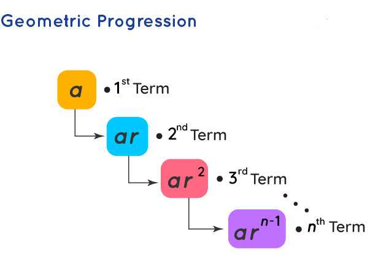

Geometric Progression (GP)
In Maths, Geometric Progression (GP) is a type of sequence where each succeeding term is produced by multiplying each preceding term by a fixed number, which is called a common ratio. This progression is also known as a geometric sequence of numbers that follow a pattern. The common ratio multiplied here to each term to get the next term is a non-zero number. An example of a Geometric sequence is 2, 4, 8, 16, 32, 64, …, where the common ratio is 2.
What is a Geometric Progression?
A geometric progression is a special type of progression where the successive terms bear a constant ratio known as a common ratio. The next term of the sequence is produced when we multiply a constant (which is non-zero) to the preceding term. It is also commonly referred to as GP. The GP is generally represented in form a, ar, ar2 .... where 'a' is the first term and 'r' is the common ratio of the progression. The common ratio can have both negative as well as positive values. To find the terms of a geometric series, we only need the first term and the constant ratio. 
Geometric Progression Formula
Here are the formulas related to geometric progressions. Consider a geometric progression a, ar, ar2, ar3, ...
| nth term | Tn = ar(n - 1) |
| Sum of the first n terms |
Sn = a(rn - 1) / (r - 1) when r > 1 and
positive while Sn = a(1 - rn) / (1 - r) when r < 1 and negative |
| Sum of infinite terms | S∞ = a / (1 - r) when r < 1 |
Solved Examples of Geometric Progression
Question 1: If the first term is 10 and the common ratio of a GP is
3, then write the first five terms of GP.
Solution:
Given,
First term, a = 10
Common ratio, r = 3
We know the general form of GP for first five terms is given by:
a, ar, ar2, ar3, ar4 gotten from
the formula: Tn = ar(n - 1)
so;
T1 = a = 10
T2 = ar = 10 × 3 = 30
T3 = ar2 = 10 × 32 = 10 × 9 = 90
T4 = ar3 = 10 × 33 = 270
T5 = ar4 = 10 × 34 = 810
Therefore, the first five terms of GP with 10 as the first term and
3 as the common ratio are: 10, 30, 90, 270 and 810
Question 2: Find the sum of GP: 10, 30, 90, 270 and 810, using
formula.
Solution:
Given GP is 10, 30, 90, 270 and 810
First term, a = 10
Common ratio, r = 30/10 = 3 > 1
Number of terms, n = 5
Sum of GP is given by;
Sn = a[(rn – 1)/(r – 1)]
S5 = 10[(35 – 1)/(3 – 1)]
= 10[(243 – 1)/2]
= 10[242/2]
= 10 × 121
= 1210
Check: 10 + 30 + 90 + 270 + 810 = 1210
Exercise:
1. The first term of a geometric progression is 3 and the common
ratio is 2. Find the 5th term.
2. The first term of a geometric progression is 5 and the common
ratio is 3. Find the sum of the first 4 terms.
3. The sum of the first 3 terms of a geometric progression is 28 and
the common ratio is 2. Find the first term.
4. The sum of the first 5 terms of a geometric progression is 465
and the common ratio is 3. Find the first term.
5. The sum of the first 4 terms of a geometric progression is 120
and the sum of the first 7 terms is 1080. Find the first term.
6. The sum of the first 3 terms of a geometric progression is 14 and
the sum of the first 6 terms is 254. Find the first term.
7. The sum of the first 4 terms of a geometric progression is 30 and
the sum of the first 7 terms is 210. Find the common ratio.
8. The sum of the first 5 terms of a geometric progression is 93 and
the sum of the first 8 terms is 465. Find the common ratio.
9. The first term of a geometric progression is 2 and the sum of the
first 5 terms is 62. Find the common ratio.
10. The first term of a geometric progression is 3 and the sum of
the first 6 terms is 364. Find the common ratio.
11. The first term of a geometric progression is 5 and the sum of
the first 4 terms is 155. Find the common ratio.
12. The first term of a geometric progression is 2 and the sum of
the first 7 terms is 254. Find the common ratio.
13. The first term of a geometric progression is 3 and the sum of
the first 5 terms is 243. Find the common ratio.
14. The first term of a geometric progression is 4 and the sum of
the first 6 terms is 508. Find the common ratio.
15. The first term of a geometric progression is 2 and the sum of
the first 8 terms is 510. Find the common ratio.
16. The first term of a geometric progression is 5 and the sum of
the first 7 terms is 1365. Find the common ratio.
17. The first term of a geometric progression is 3 and the sum of
the first 6 terms is 819. Find the common ratio.
18. The first term of a geometric progression is 4 and the sum of
the first 8 terms is 2044. Find the common ratio.
19. The first term of a geometric progression is 2 and the sum of
the first 9 terms is 1022. Find the common ratio.
20. The first term of a geometric progression is 6 and the sum of
the first 7 terms is 1806. Find the common ratio.
21. Find the sum of the first 5 terms of a geometric progression
with a first term of 3 and a common ratio of 2.
22. Calculate the sum of the first 8 terms of a geometric
progression with a first term of 5 and a common ratio of 3.
23. Determine the sum of the first 10 terms of a geometric
progression with a first term of 4 and a common ratio of 2.
24. Find the sum of the first 6 terms of a geometric progression
with a first term of 6 and a common ratio of 4.
25. Calculate the sum of the first 12 terms of a geometric
progression with a first term of 2 and a common ratio of 5.
26. Determine the sum of the first 15 terms of a geometric
progression with a first term of 7 and a common ratio of 3.
27. Find the sum of the first 20 terms of a geometric progression
with a first term of 8 and a common ratio of 2.
28. Calculate the sum of the first 25 terms of a geometric
progression with a first term of 10 and a common ratio of 4.
29. Determine the sum of the first 30 terms of a geometric
progression with a first term of 12 and a common ratio of 3.
30. Find the sum of the first 50 terms of a geometric progression
with a first term of 6 and a common ratio of 2.
31. The first term of a geometric progression is 20 and the common
ratio is 4. Find the 5th term of the progression.
32. The sum of the first three terms of a geometric progression is
21/2 and their product is 27. Find the common ratio of the
progression.
33. Find the 5th term of the geometric progression: 1/7, 1/14, 1/28,
...
34. Find the sum of the geometric progression: 8/10, 8/100, 8/1000,
8/10000, ... to n terms.
35. Find the sum of the infinite geometric progression: 12, 132,
1332, 13332, ...
36. Find the sum of the infinite geometric progression with first
term 1/3 and common ratio -2/3.
37. A liter of acid was poured out of a 10-liter vessel filled with
pure acid to the brim. If the concentration values after each
replacement form a geometric progression with the first term and
common ratio unknown, find the concentration values after the 1st,
2nd, 3rd replacements.
38. The sum of the first three terms of a geometric progression is
21/2, and their product is 27. Determine the common ratio of the
progression and find the values of the terms.
39. A ball is dropped from a height, and the distances traveled in
meters are 128/9, 32/3, 8, 6... Calculate the total distance the
ball will travel before coming to rest.
40. The sum of an infinite geometric progression with positive terms
is 48, and the sum of its first two terms is 36. Find the second
term of the progression.
41. The third term of a geometric progression is 360 and the sixth
term is 1215. Find:
(a) the common ratio
(b) the first term
(c) the sum of the first four terms
42. The difference between the third and first terms of a geometric
progression is 8, and the common ratio is 2. Find the first term.
43. The third term of a geometric progression is 10 and the sixth
term is 80. Find:
(a) the common ratio
(b) the first term
(c) the sum of the first six terms
44. The third and sixth terms of a geometric progression are 14 and
132 respectively. Find:
(a) the first term and the common ratio
(b) the sum of the first six terms
45. The sum of the first three terms of a geometric progression is
21/2 and their product is 27. Find:
(a) the common ratio
(b) the values of the terms